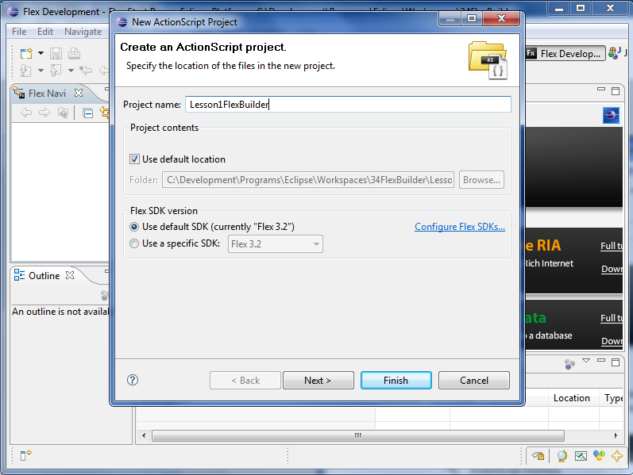

Welcome, in this lesson you will learn how to use the PushButton Engine with the Adobe Flex Builder IDE.
To complete this lesson you will need to download and install a few pieces of software.
Everytime you startup Adobe Flex Builder it will ask you where you would like to store your workspace.
Select a location that works best for you.
Adobe Flex Builder is built on top of the Eclipse platform so it defaults to a Java Perspective.
In the menubar click Window->Open Perspective->Other and click Flex Development.
Now we need to setup a new project for this lesson. Right Click in the Flex Navigator window and click New->ActionScript Project.
For this lesson we are using an ActionScript project but a Flex project will work just as well.
Let's give the project a name by typing Lesson1FlexBuilder in the Project Name text box and click next.
We now have a question to ask ourselves. "Will we be using the PushButton Engine as is or do we plan on making modifications?"
If you plan to use the PushButton Engine as is, skip to the Library Section.
If you plan on making modifications to the PushButton Engine skip to the Source Section and ignore the Library Section.
To setup the Source Path click the Source Path tab and then Add Folder.
Navigate to the folder you extracted the PushButton Engine to and add the Src folder.
To setup the Library Path click the Library Path tab and then Add SWC.
Navigate to the folder you extracted the PushButton Engine and inside the Bin folder you will have PBEngine.swc.
That's right, it's time for some code!
In the src folder we should have a file, Lesson1FlexBuilder.as.
Open Lesson1FlexBuilder.as.
Copy the code below and paste it into Lesson1FlexBuilder.as.
package
{
// Flash Imports
import flash.display.Sprite;
// PushButton Engine Imports
import com.pblabs.engine.core.Global;
import com.pblabs.Engine.Debug.Logger;
public class Lesson1FlexBuilder extends Sprite
{
public function Lesson1FlexBuilder()
{
Global.startup(this);
Logger.print(this, "Hello, World!");
}
}
}
Save the file and click Project->Build Project in the menubar.
To view our master piece click Run->Debug in the menubar.
You can see in the output window INFO: Lesson1FlexBuilder - Hello, World! being printed by the
PushButton Engine Logger.
To summarize the steps of using the PushButton Engine with the Adobe Flex Builder IDE.
Congratulations! You just completed lesson #1, creating a project and linking to the PushButton Engine.
This can be the base for lesson #2 or any future projects of your own.
You can download the completed project source files for this project below.
Lesson1FlexBuilder.zip